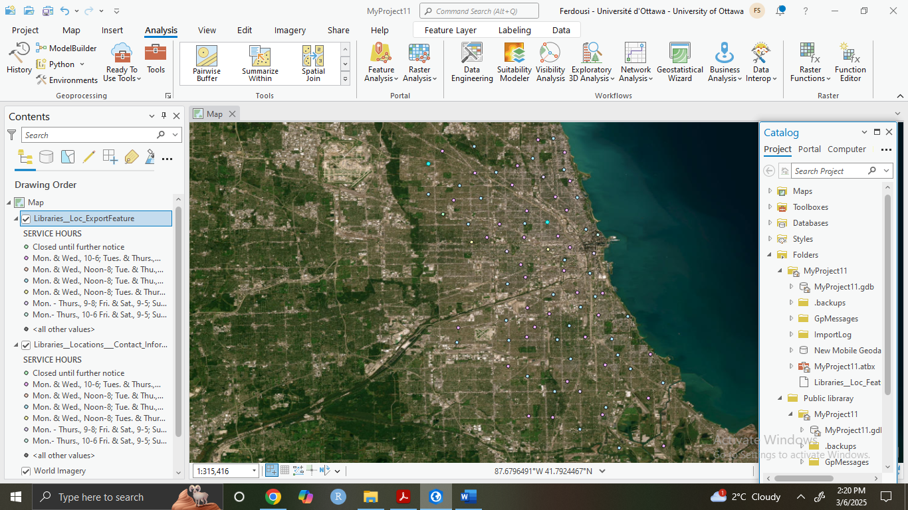

Real-Time GIS Web Mapping Project
Project Overview
This project was developed as part of my Real-Time GIS training through LinkedIn Learning. The goal was to process spatial data, create a dynamic web map, and deploy an interactive mapping application using ArcGIS tools.
Workflow and Key Highlights
-
Data Preparation and Processing in ArcGIS Pro
I began by downloading a dataset of public libraries in a city. I filtered out libraries that open at noon and structured the data into a mobile geodatabase. The spatial data was reprojected and exported into a JSON format for compatibility with web platforms.

-
Web Map Development Using ArcGIS Online
The cleaned and structured dataset was published as a web map. I configured symbology, labeling, and interactive pop-ups to enhance user interpretation and engagement.
-
Web Mapping Application with Instant App
I built an interactive web mapping application using ArcGIS Instant App. The app includes features such as search, layer filtering, and an intuitive navigation panel to improve accessibility for users.
Skills Demonstrated
- GIS Skills: Spatial data processing, symbology design, and layout development using ArcGIS Pro.
- Web GIS Development: Creating and customizing web maps and Instant Apps in ArcGIS Online.
- User Experience: Designing interactive elements to enhance usability in web applications.